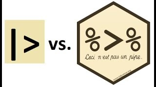

📖 Chapitre I. Les principales fonctions de gtsummary et leurs paramètres
Il existe quatre principales manières de personnaliser la sortie du tableau récapitulatif :
Utiliser les arguments de la fonction
tbl_summary()Ajouter des informations supplémentaires avec les fonctions
add_()Modifier l’apparence du tableau avec les fonctions
gtsummaryModifier l’apparence avec le package
gt
0. Préambule sur les opérateurs de pipe
Avant d’explorer les fonctionnalités de gtsummary, il est utile de comprendre les opérateurs pipe qui facilitent l’écriture de code dans R :
- Opérateur natif |> Introduit dans R 4.1, l’opérateur |> permet de simplifier l’écriture des chaînes de traitement. Il envoie la valeur située à sa gauche comme premier argument à la fonction à sa droite. Par exemple :
result <- data |> head(10)équivaut à :
result <- head(data, 10)- Pipe du tidyverse %>% Provenant du package magrittr, %>% permet également de chaîner des opérations. Ce pipe est particulièrement flexible et permet d’insérer des appels de fonctions de manière plus naturelle. Par exemple :
result <- data %>%
filter(age > 30) %>%
summarise(mean_age = mean(age, na.rm = TRUE))équivaut à :
filtered_data <- filter(data, age > 30)
result <- summarise(filtered_data, mean_age = mean(age, na.rm = TRUE))
Les deux pipes offrent une syntaxe fluide et lisible. La différence majeure réside dans la compatibilité avec d’autres packages et dans certaines subtilités syntaxiques, mais dans la pratique, ils remplissent le même rôle.
1. La fonction tbl_summary()
Description :
`Cette fonction peut prendre, au minimum, un data frame comme seul argument d’entrée et renvoie des statistiques descriptives pour chaque colonne du data frame.
## Rows: 7176 Columns: 45
## -- Column specification -----------------------------------------------------------------------
## Delimiter: ","
## chr (19): country, zae, region, milieu, hgender, hmstat, hreligion, hnation, hethnie, halfa...
## dbl (26): year, hhid, grappe, menage, vague, hhweight, hhsize, eqadu1, eqadu2, hage, dali, ...
##
## i Use `spec()` to retrieve the full column specification for this data.
## i Specify the column types or set `show_col_types = FALSE` to quiet this message.## # A tibble: 6 x 45
## country year hhid grappe menage vague zae region milieu hhweight hhsize eqadu1 eqadu2
## <chr> <dbl> <dbl> <dbl> <dbl> <dbl> <chr> <chr> <chr> <dbl> <dbl> <dbl> <dbl>
## 1 bfa 2021 586005 586 5 2 Grand-o~ Boucl~ Rural 439 8 6.72 4.18
## 2 bfa 2021 586028 586 28 2 Grand-o~ Boucl~ Rural 439 33 23.8 14.0
## 3 bfa 2021 586043 586 43 2 Grand-o~ Boucl~ Rural 439 4 2.83 2.44
## 4 bfa 2021 586044 586 44 2 Grand-o~ Boucl~ Rural 439 12 8.52 5.98
## 5 bfa 2021 586052 586 52 2 Grand-o~ Boucl~ Rural 439 12 9.21 6.28
## 6 bfa 2021 586082 586 82 2 Grand-o~ Boucl~ Rural 439 6 4.41 3.25
## # i 32 more variables: hgender <chr>, hage <dbl>, hmstat <chr>, hreligion <chr>,
## # hnation <chr>, hethnie <chr>, halfa <chr>, halfa2 <chr>, heduc <chr>, hdiploma <chr>,
## # hhandig <chr>, hactiv7j <chr>, hactiv12m <chr>, hbranch <chr>, hsectins <chr>, hcsp <chr>,
## # dali <dbl>, dnal <dbl>, dtot <dbl>, dtet <dbl>, pcexp <dbl>, zref <dbl>, def_spa <dbl>,
## # def_temp <dbl>, zaemil <dbl>, dif <dbl>, p0 <dbl>, p1 <dbl>, p2 <dbl>, pauv <dbl>,
## # quintiles <dbl>, deciles <dbl>## [1] "country" "year" "hhid" "grappe" "menage" "vague" "zae"
## [8] "region" "milieu" "hhweight" "hhsize" "eqadu1" "eqadu2" "hgender"
## [15] "hage" "hmstat" "hreligion" "hnation" "hethnie" "halfa" "halfa2"
## [22] "heduc" "hdiploma" "hhandig" "hactiv7j" "hactiv12m" "hbranch" "hsectins"
## [29] "hcsp" "dali" "dnal" "dtot" "dtet" "pcexp" "zref"
## [36] "def_spa" "def_temp" "zaemil" "dif" "p0" "p1" "p2"
## [43] "pauv" "quintiles" "deciles"library(gtsummary)
dataset |> tbl_summary(include = c(hage, hmstat))| Characteristic | N = 7,176 |
|---|---|
| hage, Median (IQR) | 43 (34 – 56) |
| hmstat, n (%) | |
| Célibataire | 349 (4.9) |
| Divorcé(e) | 50 (0.7) |
| Marié(e) monogame | 4,352 (61) |
| Marié(e) polygame | 1,572 (22) |
| Séparé(e) | 86 (1.2) |
| Union libre | 199 (2.8) |
| Veuf(ve) | 568 (7.9) |
Arguments clés : La fonction tbl_summary() propose plusieurs options pour modifier l’apparence du tableau récapitulatif. Voici un aperçu des principaux arguments :
- type : Définit le type de variable (ex. : continue, catégorielle, etc.).
- sort : Trie les niveaux d’une variable catégorielle par fréquence.
- percent : Définit si les pourcentages doivent être affichés par colonne, ligne ou cellule.
- by : Permet de stratifier les statistiques selon une variable spécifique (par exemple, pour comparer les groupes).
- label : Personnalise les étiquettes affichées pour les variables.
- statistic : Définit les statistiques à afficher pour chaque variable, en utilisant souvent la syntaxe {glue} (ex. :
"{mean} ({sd})"). - digits : Spécifie le nombre de décimales à utiliser pour l’affichage des statistiques.
- missing : Indique s’il faut afficher une ligne avec le nombre de valeurs manquantes (“ifany” : Affichage explicite des valeurs manquantes si elles existent)
- include : Liste des variables à inclure dans le tableau.
Exemple de script :
library(dplyr)
library(gtsummary)
tbl_summary_examplesimple <- dataset %>%
tbl_summary(
by = hgender, # Stratification : les statistiques sont calculées séparément pour chaque sexe
include = hage, # Seule 'hage' est dans le tableau
label = hage ~ "Age du chef de ménage",
statistic = all_continuous() ~ "{mean} ({sd})", # Pour les variables continues, afficher la moyenne et l'écart-type
digits = all_continuous() ~ 2, # Val nom avec 2 décimales
missing = "ifany" # Affichage explicite des valeurs manquantes si elles existent
)
# Affichage du tableau
tbl_summary_examplesimple| Characteristic | Féminin N = 1,075 |
Masculin N = 6,101 |
|---|---|---|
| Age du chef de ménage, Mean (SD) | 47.97 (15.37) | 45.27 (14.50) |
Exemple d’interprétation :
- L’échantillon est dominé par des hommes, qui représentent la grande majorité des chefs de ménage (6 101 contre 1 075).
- En moyenne, les chefs de ménage féminins sont plus âgés (47.97 ans) que les chefs de ménage masculins (45.27 ans).
- De plus, la variabilité de l’âge des chefs de ménage est légèrement plus élevée chez les femmes (15.37 contre 14.50).
Allons plus loin en incluant plusieurs variables dans notre tableau …
library(gtsummary)
library(dplyr)
# Création d'un tableau de synthèse stratifié par la variable 'hage'
tbl_summary_example <- dataset %>%
tbl_summary(
by = hgender,
include = c(hage, hhsize, hmstat, hreligion, hdiploma, hhandig), # Toutes ces variables seront incluses dans le tableau
label = list(
hage ~ "Âge du chef de ménage",
hhsize ~ "Taille du ménage",
hmstat ~ "Statut matrimonial du chef de ménage",
hreligion ~ "Religion",
hdiploma ~ "Plus haut diplôme du chef de ménage",
hhandig ~ "Des handicapés dans le ménage ?"
),
statistic = all_continuous() ~ "{mean} ({sd})",
digits = all_continuous() ~ 2,
missing = "ifany"
)
# Affichage du tableau
tbl_summary_example| Characteristic | Féminin N = 1,075 |
Masculin N = 6,101 |
|---|---|---|
| Âge du chef de ménage, Mean (SD) | 47.97 (15.37) | 45.27 (14.50) |
| Taille du ménage, Mean (SD) | 4.53 (2.68) | 6.77 (4.09) |
| Statut matrimonial du chef de ménage, n (%) | ||
| Célibataire | 89 (8.3) | 260 (4.3) |
| Divorcé(e) | 23 (2.1) | 27 (0.4) |
| Marié(e) monogame | 229 (21) | 4,123 (68) |
| Marié(e) polygame | 171 (16) | 1,401 (23) |
| Séparé(e) | 44 (4.1) | 42 (0.7) |
| Union libre | 9 (0.8) | 190 (3.1) |
| Veuf(ve) | 510 (47) | 58 (1.0) |
| Religion, n (%) | ||
| Animiste | 55 (5.1) | 353 (5.8) |
| Autre Réligion | 2 (0.2) | 2 (<0.1) |
| Chrétien | 450 (42) | 1,762 (29) |
| Musulman | 563 (52) | 3,965 (65) |
| Sans Réligion | 5 (0.5) | 19 (0.3) |
| Plus haut diplôme du chef de ménage, n (%) | ||
| Aucun | 862 (80) | 4,689 (77) |
| BAC | 36 (3.3) | 193 (3.2) |
| BEPC | 55 (5.1) | 339 (5.6) |
| BT | 0 (0) | 5 (<0.1) |
| CAP | 5 (0.5) | 15 (0.2) |
| CEPE | 95 (8.8) | 631 (10) |
| DEUG, DUT, BTS | 5 (0.5) | 53 (0.9) |
| Doctorat/Phd | 2 (0.2) | 2 (<0.1) |
| Licence | 9 (0.8) | 101 (1.7) |
| Maitrise | 5 (0.5) | 38 (0.6) |
| Master/DEA/DESS | 1 (<0.1) | 35 (0.6) |
| Des handicapés dans le ménage ?, n (%) | ||
| Non | 977 (91) | 5,786 (95) |
| Oui | 98 (9.1) | 315 (5.2) |
2. Fonctions d’ajout d’informations
a. add_overall()
Description :
Ajoute une colonne contenant les statistiques globales (non stratifiées), en complément de celles affichées par groupe.
Paramètres importants :
- last : Positionne la colonne globale à la fin du tableau (TRUE/FALSE).
- col_label : Permet de personnaliser l’intitulé de la colonne globale.
Exemple de script :
tbl_summary_overall <- tbl_summary_example %>%
add_overall(
last = TRUE,
col_label = "**Colonne des totaux** {N}"
)
tbl_summary_overall| Characteristic | Féminin N = 1,075 |
Masculin N = 6,101 |
Colonne des totaux 7176 |
|---|---|---|---|
| Âge du chef de ménage, Mean (SD) | 47.97 (15.37) | 45.27 (14.50) | 45.68 (14.67) |
| Taille du ménage, Mean (SD) | 4.53 (2.68) | 6.77 (4.09) | 6.44 (3.99) |
| Statut matrimonial du chef de ménage, n (%) | |||
| Célibataire | 89 (8.3) | 260 (4.3) | 349 (4.9) |
| Divorcé(e) | 23 (2.1) | 27 (0.4) | 50 (0.7) |
| Marié(e) monogame | 229 (21) | 4,123 (68) | 4,352 (61) |
| Marié(e) polygame | 171 (16) | 1,401 (23) | 1,572 (22) |
| Séparé(e) | 44 (4.1) | 42 (0.7) | 86 (1.2) |
| Union libre | 9 (0.8) | 190 (3.1) | 199 (2.8) |
| Veuf(ve) | 510 (47) | 58 (1.0) | 568 (7.9) |
| Religion, n (%) | |||
| Animiste | 55 (5.1) | 353 (5.8) | 408 (5.7) |
| Autre Réligion | 2 (0.2) | 2 (<0.1) | 4 (<0.1) |
| Chrétien | 450 (42) | 1,762 (29) | 2,212 (31) |
| Musulman | 563 (52) | 3,965 (65) | 4,528 (63) |
| Sans Réligion | 5 (0.5) | 19 (0.3) | 24 (0.3) |
| Plus haut diplôme du chef de ménage, n (%) | |||
| Aucun | 862 (80) | 4,689 (77) | 5,551 (77) |
| BAC | 36 (3.3) | 193 (3.2) | 229 (3.2) |
| BEPC | 55 (5.1) | 339 (5.6) | 394 (5.5) |
| BT | 0 (0) | 5 (<0.1) | 5 (<0.1) |
| CAP | 5 (0.5) | 15 (0.2) | 20 (0.3) |
| CEPE | 95 (8.8) | 631 (10) | 726 (10) |
| DEUG, DUT, BTS | 5 (0.5) | 53 (0.9) | 58 (0.8) |
| Doctorat/Phd | 2 (0.2) | 2 (<0.1) | 4 (<0.1) |
| Licence | 9 (0.8) | 101 (1.7) | 110 (1.5) |
| Maitrise | 5 (0.5) | 38 (0.6) | 43 (0.6) |
| Master/DEA/DESS | 1 (<0.1) | 35 (0.6) | 36 (0.5) |
| Des handicapés dans le ménage ?, n (%) | |||
| Non | 977 (91) | 5,786 (95) | 6,763 (94) |
| Oui | 98 (9.1) | 315 (5.2) | 413 (5.8) |
Exemple d’interprétation :
- L’échantillon total comprend 7,176 chefs de ménage.
- L’âge moyen global est 45.68 ans tandis que l’écart-type global est 14.67 ans.
b. add_n()
Description :
Ajoute une colonne indiquant le nombre d’observations (ou le nombre d’observations non manquantes) pour chaque variable.
Paramètres importants :
- col_label : Modifie l’intitulé de la colonne.
- statistic : Permet de définir le format d’affichage des effectifs.
- footnote : Ajoute une note de bas de tableau explicative.
Exemple de script :
tbl_summary_with_n <- tbl_summary_example %>%
add_n(
col_label = "**Effectif**", # Intitulé de la colonne
statistic = "{N_nonmiss}", # Affichage des effectifs et des pourcentages
) %>%
modify_table_styling(
columns = everything(),
footnote = "Nbre d'observations non manquantes"
)
# Afficher le tableau final
tbl_summary_with_n| Characteristic1 | Effectif1 | Féminin N = 1,0751 |
Masculin N = 6,1011 |
|---|---|---|---|
| Âge du chef de ménage, Mean (SD) | 7,176 | 47.97 (15.37) | 45.27 (14.50) |
| Taille du ménage, Mean (SD) | 7,176 | 4.53 (2.68) | 6.77 (4.09) |
| Statut matrimonial du chef de ménage, n (%) | 7,176 | ||
| Célibataire | 89 (8.3) | 260 (4.3) | |
| Divorcé(e) | 23 (2.1) | 27 (0.4) | |
| Marié(e) monogame | 229 (21) | 4,123 (68) | |
| Marié(e) polygame | 171 (16) | 1,401 (23) | |
| Séparé(e) | 44 (4.1) | 42 (0.7) | |
| Union libre | 9 (0.8) | 190 (3.1) | |
| Veuf(ve) | 510 (47) | 58 (1.0) | |
| Religion, n (%) | 7,176 | ||
| Animiste | 55 (5.1) | 353 (5.8) | |
| Autre Réligion | 2 (0.2) | 2 (<0.1) | |
| Chrétien | 450 (42) | 1,762 (29) | |
| Musulman | 563 (52) | 3,965 (65) | |
| Sans Réligion | 5 (0.5) | 19 (0.3) | |
| Plus haut diplôme du chef de ménage, n (%) | 7,176 | ||
| Aucun | 862 (80) | 4,689 (77) | |
| BAC | 36 (3.3) | 193 (3.2) | |
| BEPC | 55 (5.1) | 339 (5.6) | |
| BT | 0 (0) | 5 (<0.1) | |
| CAP | 5 (0.5) | 15 (0.2) | |
| CEPE | 95 (8.8) | 631 (10) | |
| DEUG, DUT, BTS | 5 (0.5) | 53 (0.9) | |
| Doctorat/Phd | 2 (0.2) | 2 (<0.1) | |
| Licence | 9 (0.8) | 101 (1.7) | |
| Maitrise | 5 (0.5) | 38 (0.6) | |
| Master/DEA/DESS | 1 (<0.1) | 35 (0.6) | |
| Des handicapés dans le ménage ?, n (%) | 7,176 | ||
| Non | 977 (91) | 5,786 (95) | |
| Oui | 98 (9.1) | 315 (5.2) | |
| 1 Nbre d’observations non manquantes | |||
Dans cet exemple, nous avons utilisé uniquement les fonctions add_n() et add_overall() de {gtsummary} pour enrichir notre tableau de synthèse.
Cependant, il existe d’autres fonctions comme add_p() pour ajouter des p-values pour comparer les groupes, add_difference() pour calculer la différence entre deux groupes avec l’intervalle de confiance et la p-value associée, ou encore add_stat_label() pour ajouter des étiquettes aux statistiques affichées. Nous n’avons pas utilisé ces fonctions ici, car elles nécessitent la mise en œuvre de tests statistiques, ce que nous n’avons pas encore couvert dans le cadre de notre formation.
3. Fonctions de personnalisation du tableau
Ces fonctions de formatage de table proposées par {gtsummary} permettent de modifier l’aspect du tableau après sa création. - modify_header() : Met à jour les en-têtes de colonnes.
# Modifier les en-têtes des colonnes
tbl_summary_modified <- tbl_summary_example %>%
modify_header(stat_1 ~ "**Femmes**", # Personnaliser l'en-tête de la 1ere colonne des statistiques
stat_2 ~ "**Hommes**" # pour la 2e
)
# Afficher le tableau modifié
tbl_summary_modified| Characteristic | Femmes | Hommes |
|---|---|---|
| Âge du chef de ménage, Mean (SD) | 47.97 (15.37) | 45.27 (14.50) |
| Taille du ménage, Mean (SD) | 4.53 (2.68) | 6.77 (4.09) |
| Statut matrimonial du chef de ménage, n (%) | ||
| Célibataire | 89 (8.3) | 260 (4.3) |
| Divorcé(e) | 23 (2.1) | 27 (0.4) |
| Marié(e) monogame | 229 (21) | 4,123 (68) |
| Marié(e) polygame | 171 (16) | 1,401 (23) |
| Séparé(e) | 44 (4.1) | 42 (0.7) |
| Union libre | 9 (0.8) | 190 (3.1) |
| Veuf(ve) | 510 (47) | 58 (1.0) |
| Religion, n (%) | ||
| Animiste | 55 (5.1) | 353 (5.8) |
| Autre Réligion | 2 (0.2) | 2 (<0.1) |
| Chrétien | 450 (42) | 1,762 (29) |
| Musulman | 563 (52) | 3,965 (65) |
| Sans Réligion | 5 (0.5) | 19 (0.3) |
| Plus haut diplôme du chef de ménage, n (%) | ||
| Aucun | 862 (80) | 4,689 (77) |
| BAC | 36 (3.3) | 193 (3.2) |
| BEPC | 55 (5.1) | 339 (5.6) |
| BT | 0 (0) | 5 (<0.1) |
| CAP | 5 (0.5) | 15 (0.2) |
| CEPE | 95 (8.8) | 631 (10) |
| DEUG, DUT, BTS | 5 (0.5) | 53 (0.9) |
| Doctorat/Phd | 2 (0.2) | 2 (<0.1) |
| Licence | 9 (0.8) | 101 (1.7) |
| Maitrise | 5 (0.5) | 38 (0.6) |
| Master/DEA/DESS | 1 (<0.1) | 35 (0.6) |
| Des handicapés dans le ménage ?, n (%) | ||
| Non | 977 (91) | 5,786 (95) |
| Oui | 98 (9.1) | 315 (5.2) |
modify_footnote_header() : Met à jour la note de bas de colonne dans l’en-tête.
modify_footnote_body() : Met à jour la note de bas de colonne dans le corps du tableau.
modify_spanning_header() : Met à jour les en-têtes englobants (spanning headers).
modify_caption() : Met à jour la légende du tableau (titre).
bold_labels() : Met en gras les étiquettes des variables.
bold_levels() : Met en gras les niveaux des variables.
italicize_labels() : Met en italique les étiquettes des variables.
italicize_levels() : Met en italique les niveaux des variables.
bold_p() : Met en gras les p-values significatives.
# Charger les bibliothèques nécessaires
library(gtsummary)
library(dplyr)
# Créer le tableau de synthèse personnalisé
tbl_summary_personalized <- dataset %>%
tbl_summary(
by = hmstat,
include = c(hage, hhsize) # Sélection des variables
) %>%
add_overall() %>% # Ajouter une colonne avec les statistiques globales
add_n() %>% # Ajouter une colonne avec N (ou N manquants)
modify_header(label ~ "**Variable**") %>% # Modifier l'en-tête des variables
modify_spanning_header(c("stat_1", "stat_2") ~ "**Etat matrimonial**") %>% # Ajouter des en-têtes englobants
#modify_footnote(c("Median (IQR)", "Frequency (%)")) %>% # Modifier les notes de bas de page
modify_caption("**Tableau modifié. Personnalisation**") %>% # Ajouter une légende
bold_labels() %>% # Mettre en gras les étiquettes des variables
italicize_labels()
# Afficher le tableau modifié
tbl_summary_personalized| Variable | N | Overall N = 7,176 |
Etat matrimonial
|
Marié(e) monogame N = 4,352 |
Marié(e) polygame N = 1,572 |
Séparé(e) N = 86 |
Union libre N = 199 |
Veuf(ve) N = 568 |
|
|---|---|---|---|---|---|---|---|---|---|
| Célibataire N = 349 |
Divorcé(e) N = 50 |
||||||||
| hage, Median (IQR) | 7,176 | 43 (34 – 56) | 28 (24 – 34) | 46 (35 – 55) | 41 (33 – 52) | 50 (41 – 61) | 46 (36 – 52) | 36 (29 – 44) | 58 (48 – 67) |
| hhsize, Median (IQR) | 7,176 | 6.0 (4.0 – 8.0) | 2.0 (1.0 – 3.0) | 3.0 (2.0 – 4.0) | 5.0 (4.0 – 7.0) | 9.0 (6.0 – 12.0) | 3.5 (2.0 – 5.0) | 5.0 (3.0 – 6.0) | 4.0 (3.0 – 6.0) |
4. Personnalisation de l’apparence avec les thèmes gtsummary
Le package gtsummary offre plusieurs thèmes intégrés pour personnaliser l’apparence des tableaux générés, permettant ainsi d’adapter l’affichage en fonction du contexte d’utilisation (publication académique, rapport professionnel, etc.). Ces thèmes influencent l’aspect général du tableau, comme l’espacement, la mise en forme des en-têtes et des colonnes, ainsi que l’agencement des lignes et des bordures.
a. Le thème theme_gtsummary_journal()
Ce thème est conçu pour les publications académiques. Il donne aux tableaux un aspect formel, avec des bordures nettes et un espacement plus large entre les lignes, ce qui facilite la lisibilité dans un contexte académique.
set_gtsummary_theme(theme_gtsummary_journal()) # Appliquer le thème 'journal'## Setting theme "JAMA"
## Setting theme "JAMA"dataset |> tbl_summary(include = c(hage, hmstat))| Characteristic | N = 7,176 |
|---|---|
| hage, Median (IQR) | 43 (34 – 56) |
| hmstat, n (%) | |
| Célibataire | 349 (4.9) |
| Divorcé(e) | 50 (0.7) |
| Marié(e) monogame | 4,352 (61) |
| Marié(e) polygame | 1,572 (22) |
| Séparé(e) | 86 (1.2) |
| Union libre | 199 (2.8) |
| Veuf(ve) | 568 (7.9) |
b. Le thème theme_gtsummary_compact()
Ce thème est plus compact et réduit l’espacement entre les lignes et les colonnes, ce qui est utile pour des tableaux denses où vous souhaitez économiser de l’espace.
set_gtsummary_theme(theme_gtsummary_compact()) # Appliquer le thème 'compact'## Setting theme "Compact"
## Setting theme "Compact"dataset |> tbl_summary(include = c(hage, hmstat))| Characteristic | N = 7,176 |
|---|---|
| hage, Median (IQR) | 43 (34 – 56) |
| hmstat, n (%) | |
| Célibataire | 349 (4.9) |
| Divorcé(e) | 50 (0.7) |
| Marié(e) monogame | 4,352 (61) |
| Marié(e) polygame | 1,572 (22) |
| Séparé(e) | 86 (1.2) |
| Union libre | 199 (2.8) |
| Veuf(ve) | 568 (7.9) |
c. Autres thèmes
Les autres thèmes incluent : - Le thème theme_gtsummary_minimal() Ce thème offre une présentation simple et épurée, idéale pour des rapports où une mise en page sobre et sans distraction est préférée. Il minimise les bordures et utilise un design plus léger.
Le thème theme_gtsummary_striped() Ce thème ajoute des bandes alternées aux lignes du tableau pour améliorer la lisibilité, particulièrement utile pour des tableaux longs ou complexes où la distinction entre les lignes peut être difficile sans cette séparation visuelle.
Le thème theme_gtsummary_merged() Ce thème est orienté vers des tableaux où des cellules peuvent être fusionnées pour offrir une apparence plus uniforme et cohérente. Il est souvent utilisé pour les tableaux présentant des regroupements de variables.
Le thème theme_gtsummary_dark() Ce thème crée une présentation avec des couleurs sombres, offrant un design adapté aux interfaces de type “mode sombre”. Il est utile lorsque vous présentez vos données dans des environnements sombres ou lorsque vous souhaitez donner un aspect plus moderne à vos rapports.
Il est aussi possible de regrouper plusieurs tableaux avec tbl_stack. Nous verrons l’application dans la partie qui suit.